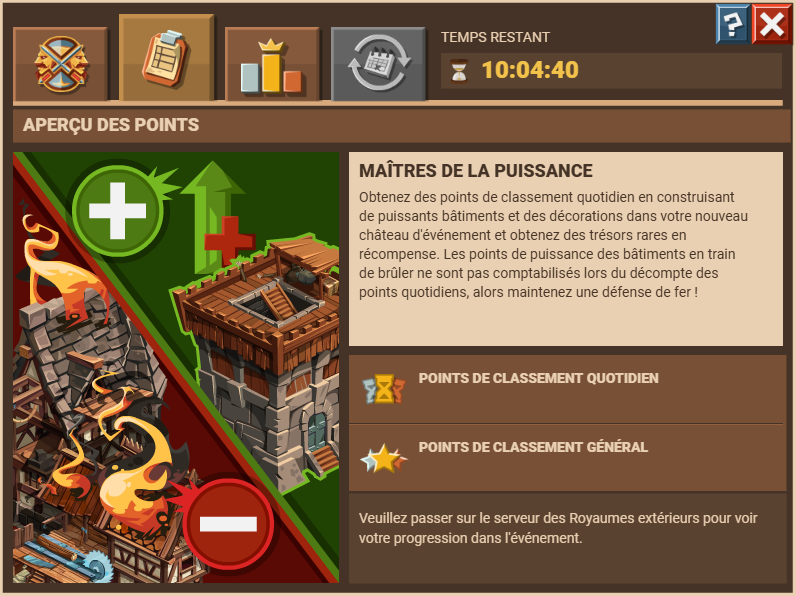
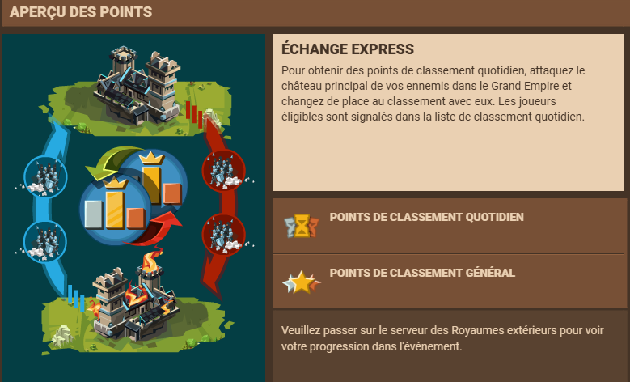
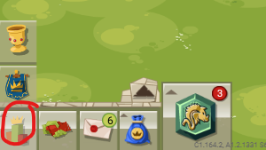
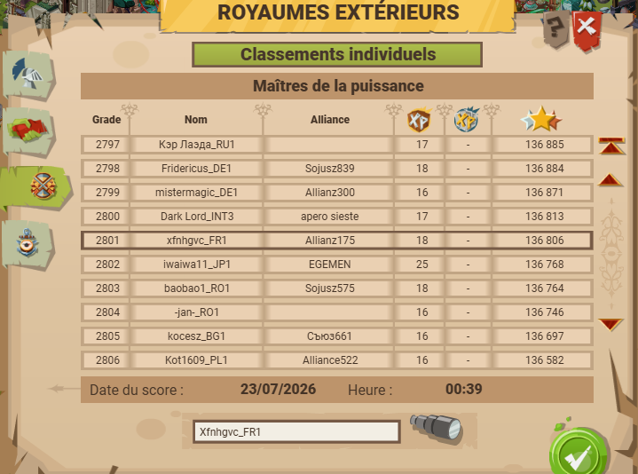
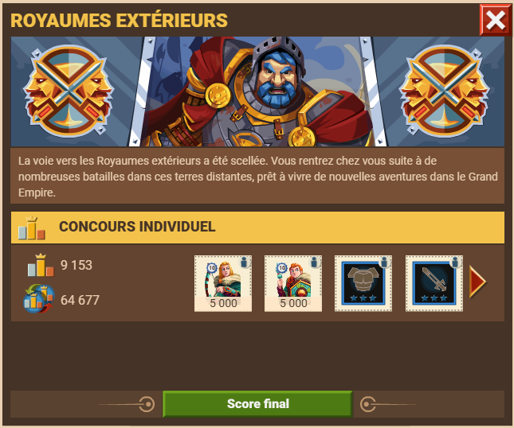

C'est un évènement qui dure environ 3 à 4 jours. Le principe est de construire un château (à partir du lvl 10) dans les "royaumes extérieurs". Il y a 3 modes de jeu, et à la clés des récompenses (10k soso hydro, jetons de construction et d'amélioration et plus). Peu importe le mode de jeu, il y a un point commun qui revient : la botique ruru/pièce ! Anciennement dans les offres en base de l'écran, maintenant chez le maître-forgeron.



Seul les points de puissance dess bâtiments comptent !
Le meilleure moyen d'y parvenir est de construire des bâtiments reliques (1050 PP pour le bûcheron relique par exemple)
Pour acquérir assez de ruru, le mieux est de faire des quêtes ruru et ensuite achter des jetons.

Chaque joueurs commence avec 5k de points de patrimoine. Ces points "s'échangent" par attaque sur les uns et les autres, et le but est d'en avoir le plus possible. Pour éviter de passer trop de temps sur ce mode, quelques astuces :
Se connecter le 2-3e jour, et rentrer dans les RE. Le mieux est de rentrer dans les RE peu avant 00h30, heure à laquelle sont fait les classements.
Le dernier jour : faire les quêtes (auberge des généraux) pour récupérer 250 albalétriers lourds mini et lancer des attaques (mieux vaut spy avant attaquer si possible)

Dans ce mode, c'est le classement qui compte. Les places de classement changent en fonction des cibles : si je suis top 5421 et j'attaque un top 2345, je monte dans le classement. Mais si je tape sur un top 6535 alors que je suis top 5421, je gagne rien. J1 : Entrer dans les RE dès le 1er jour, et ne RIEN faire. J2 : Faire les quêtes pour faire le plein de soso, puis aller dans le classement. Chercher les joeurs au-ddessus dans le classement et proche de votre CP, et les attaquer (spy si possible). Toutes les attaques doivent arriver avant 00h30 pour être prises en compte dans le classement. J3 : Faire comme au J2.
En plus des grosses récompenses (10k soso hydro, jetons de construction et d'amélioration et plus), il y a les récompenses d'activités : jetons construction/amélioration et équipement.
Divisé en plusieurs quêtes :

Quêtes
Récompenses moindres, mais quand même :


La plus basse (top 10 000)


Après chaque RE, il y a le classement qui est affiché soit directement après l'eve, et il est aussi disponible via le classement :

puis
Il y a toujours un pop-up pour informer des récompenses reçues et du classement le lendemain des RE. Voici un exemple :
